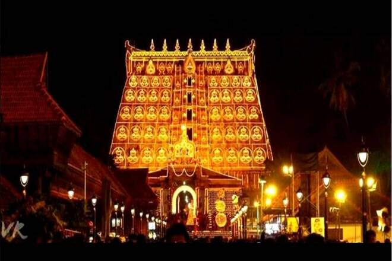
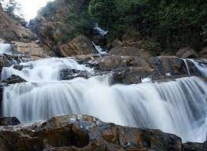
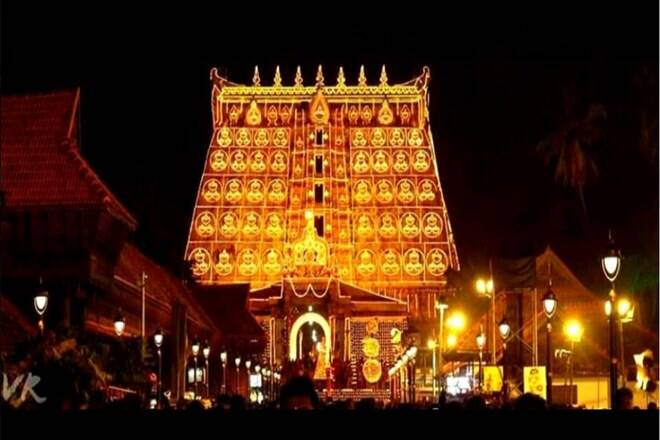
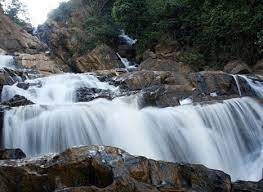

WELLCOME
God's Own Country
Explore More
Kollam is an ancient trading town – trading with Romans, Chinese, Arabs, and other Orientals – mentioned in historical citations dating back to Biblical times ...
Explore more
Kozhikode is a coastal city in the south Indian state of Kerala. It was a significant spice trade center and is close to Kappad Beach, where Portuguese
Explore more
Thiruvananthapuram (or Trivandrum) is the capital of the southern Indian state of Kerala. It's distinguished by its British colonial architecture and many
Explore more
Alappuzha (or Alleppey) is a city on the Laccadive Sea in the southern Indian state of Kerala. It's best known for houseboat cruises along the rustic
Explore more
Kottayam, IPA: is a city in the Indian state of Kerala. Flanked by the Western Ghats on the east and the Vembanad Lake and paddy fields of Kut
Explore moreKannur is a coastal city in the south Indian state of Kerala. It was once an ancient trading port. Enduring monuments such as 16th-century St. Angelo Fort,
Explore more
Kasaragod formerly known in English as Kassergode, and Malayalam as Kanhirakode, is a municipal town and administrative headquarters of Kasaragod
Explore more
Wayanad is a rural district in Kerala state, southwest India. In the east, the Wayanad Wildlife Sanctuary is a lush In the east, the Wayanad
Explore moreMalappuram is a city in the Indian state of Kerala, spread over an area of 58.20 km². The first municipality in the district formed in 1970,
Explore more
Idukki district is a densely forested, mountainous region in the south Indian state of Kerala. In the north, Anamudi mountain towers
Explore morePathanamthitta is a municipality situated in the Central Travancore region in the state of Kerala, India, spread over an area
Explore more
Palakkad, or Palghat, is a city in Kerala, a state in southwestern India. The 18th-century Palakkad Fort has sturdy battlements
Explore more
Thrissur is a city in the south Indian state of Kerala. It's known for sacred sites and colorful festivals.
Explore more
Sprawling, residential Ernakulam is known for Marine Drive, a busy waterfront promenade where boats offer backwater cruises.
Explore more


 


